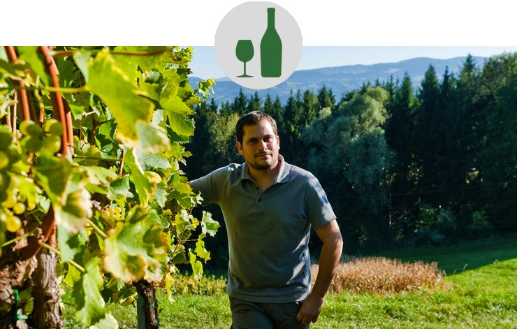
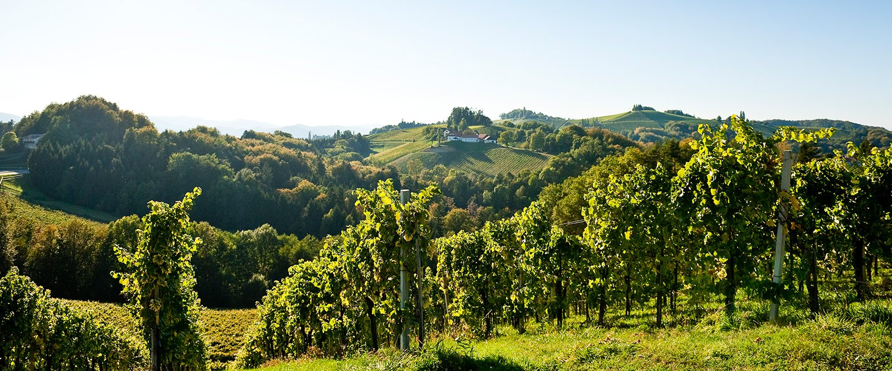
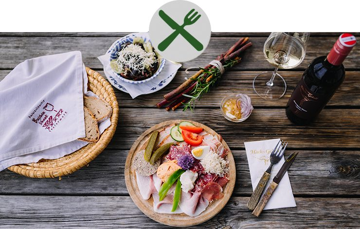
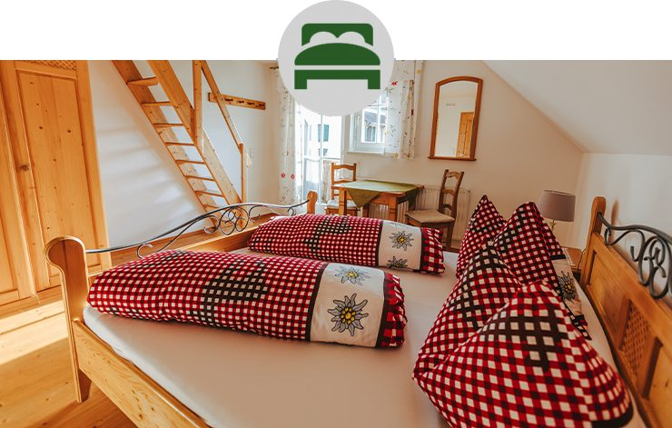
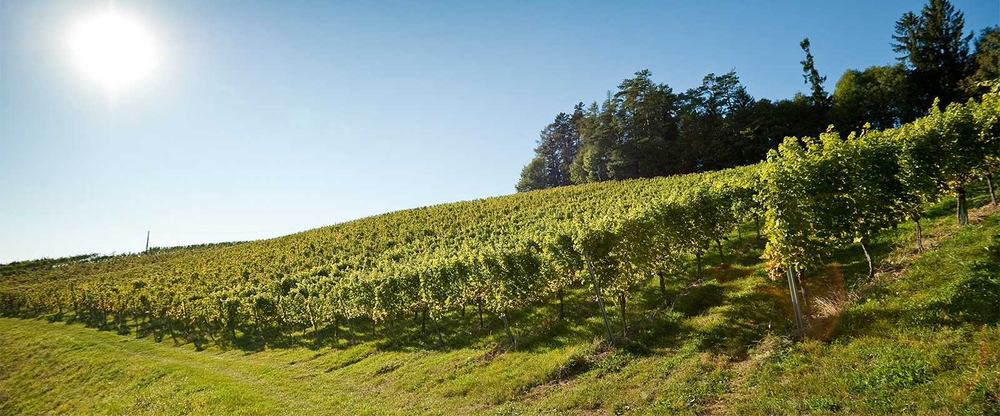
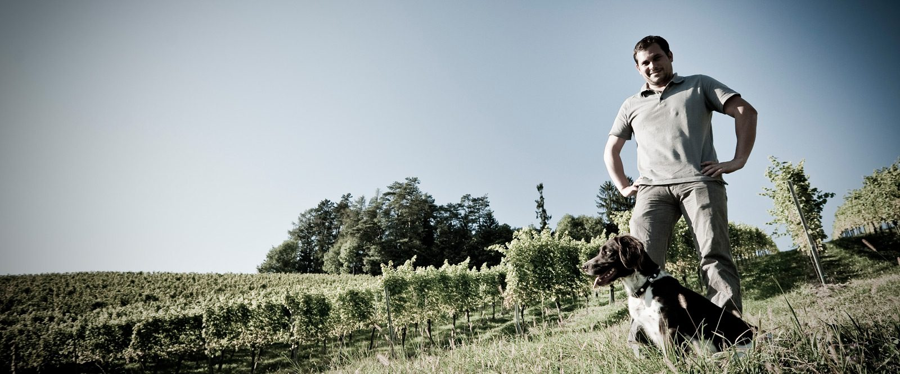

Das Weingut
Die 15 Hektar Weingärten werden mit viel Sorgfalt und überwiegend in Handarbeit gepflegt. Diese Hingabe spiegelt sich in jeder Traube und schließlich in der Qualität unserer Weine wider.
Ihr Genusserlebnis dort, wo Wein- und Buschenschanktradition seit Jahrhunderten gelebt wird: Weingut, ausgezeichneter Buschenschank und Gästezimmer am Eckberg in Gamlitz.
15 Hektar WeingärtenAusgezeichneter Buschenschank11 GästezimmerNaturpark-Partnerbetrieb

In unserem rund 360 Jahre alten Winzerhaus verbinden wir Tradition mit Gastfreundschaft: eine herzhafte, selbstgemachte Buschenschank-Jause, begleitet von unseren Weinen. Lassen Sie sich von der urigen Atmosphäre verzaubern und genießen Sie entspannte Stunden auf der gemütlichen Sonnenterrasse oder in den historischen Stuben.
Eingebettet in die sanfte Hügellandschaft der Südsteirischen Weinstraße, umgeben von Weingärten, Wiesen und Wäldern, ist unser Weingut der perfekte Ausgangspunkt für Wanderungen und Radtouren im Naturpark Südsteiermark. Wer länger bleiben möchte, findet in unseren Gästezimmern ein behagliches Zuhause auf Zeit.
Wir freuen uns auf Ihren Besuch! Herzliche Grüße aus der Südsteiermark, Philipp & Brigitte Hack


Die 15 Hektar Weingärten werden mit viel Sorgfalt und überwiegend in Handarbeit gepflegt. Diese Hingabe spiegelt sich in jeder Traube und schließlich in der Qualität unserer Weine wider.
Die jahrhundertealten Holzbalken, das kunstvoll gesetzte Ziegelgewölbe und die geschichtsträchtigen Steine des rund 360 Jahre alten Winzerhauses erzählen von vergangenen Zeiten.

Weingut tut gut. Mitten im Naturpark Südsteiermark erwartet Sie ein Rückzugsort zum Entspannen und Genießen – umgeben von Weinbergen, Natur und Ruhe.
Von über 800 Weinbaubetrieben mit Buschenschank in der Steiermark dürfen nur 71 dieses Qualitätssiegel tragen – für exzellente Weine, authentische Kulinarik und herzliche Gastfreundschaft.
Vier eingereichte Produkte, vier Auszeichnungen bei der Steirischen Spezialitätenprämierung der Landwirtschaftskammer Steiermark: Gold für Bauchspeck, Kübelfleisch-Kaiserteil und Lendbratl, „Ausgezeichnet“ für den gekochten Hausschinken.
Wir sind Naturparkpartner, weil uns die südsteirische Kulturlandschaft am Herzen liegt – und wurden 2016 zum Naturpark-Partner-Betrieb des Jahres gewählt.
Betriebsurlaub: 20. bis 23. Juli 2026 (Montag bis Mittwoch). Ab Freitag, 25. Juli, ist wieder wie gewohnt geöffnet.
Ab-Hof-Weinverkauf ist auch nach telefonischer Vereinbarung gerne möglich: +43 3454 303.
Hinein in die Natur, die Aussicht auf die südsteirische Hügellandschaft inhalieren, die selbstgemachte Jause genießen, dazu ein gutes Glaserl Wein.
Der gefüllte Picknick-Korb für zwei Personen kostet € 63,–, alkoholfrei € 53,–. Decke und den Tipp für’s schönste Platzerl gibt’s dazu.

Wir sind Naturparkpartner, weil uns die südsteirische Kulturlandschaft sehr am Herzen liegt. Dieses Fleckchen Erde stellt eine besondere Schönheit dar und beheimatet eine große Artenvielfalt von Flora und Fauna. Im überlegten Umgang mit der Natur ist es unsere Verantwortung, unseren Lebensraum auch für die nächsten Generationen zu erhalten.
Heimische Produkte zu verwenden und die Jause sowie unsere Marmeladen selbst zu produzieren, ist ein weiterer Beitrag, um diese Kulturlandschaft zu erhalten.

3 Nächte / 4 Tage
Mit Begrüßungsglaserl, Buschenschankabend und Weinverkostung für zwei Personen.
ab € 159,– pro Person · Details
3 Nächte
Picknick im Weingarten, Buschenschankabend mit Naturparkjause und eine kleine Überraschung.
ab € 190,– pro Person · Details
5 Nächte / 6 Tage
Buschenschankabend mit Weinverkostung und ein Südsteiermark-Wanderrucksack pro Doppelzimmer.
ab € 299,– pro Person · Details
Gebietsweine mit Trinkfluss, Riedenweine mit Tiefgang – und ein Ab-Hof-Verkauf, bei dem Sie beides mit nach Hause nehmen.